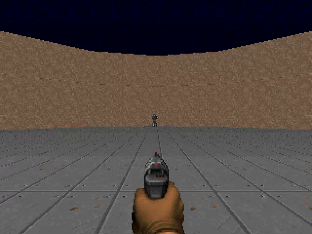
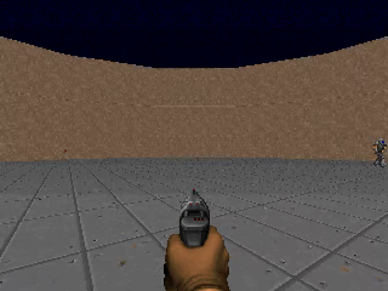

1三種「對上」
重現的每一步都要先回答：本機的數字要和作者的差多少以內，才算對上？答案取決於那一步有沒有隨機性、隨機性有沒有被固定住。這一頁用三種判定標準：
| 判定標準 | 什麼時候用 | 本頁哪些步驟 |
|---|---|---|
| 逐位相同：檔案或數字一個位元都不差 | 這一步沒有隨機性，或隨機性由亂數種子完全固定（種子 seed 是給電腦隨機數產生器的起點；起點相同，抽出來的整串隨機數就相同，所以「隨機」的過程也能重做得一模一樣） | FF1、FF2、FF4、FF5 |
| 在誤差範圍內：與作者的值相差不超過一個事先訂好的比例 | 這一步的隨機輸入在不同電腦上不保證相同 | FF3（訂 ±20%） |
| 形狀相同：條件之間的高低順序與差距方向一樣 | 環境的某個版本和作者不同，數字本來就不會一樣 | 換成 ViZDoom 1.3.2 之後的 FF5（第 8 節） |
骰子是說明用的例子，不是實驗數字；ViZDoom 1.3.2 的結果見第 8 節。
2結論：六個步驟的成績
| 步驟 | 做什麼 | 判定標準 | 結果 |
|---|---|---|---|
| FF1 | 核對連線表 | 逐位相同 | 相同：138,639 顆神經元、15,091,983 條連結、54,492,922 個突觸，與 FlyWire 官方檔逐條一致 |
| FF2 | 重新抽出子圖 | 逐位相同 | 相同：兩個輸出檔的 md5（檔案內容的指紋，見第 4 節）與作者附的檔案一致 |
| FF3 | 子圖與全腦的反應比較 | 大於 10 Hz 的項目在作者值的 ±20% 內（更小的放電率比例沒有意義），方向相同；兩個門檻是本課事先訂的，理由見第 5 節 | 12 項中 11 項在範圍內，1 項 +22%；方向全部相同 |
| FF4 | 校準閾值 | 逐位相同 | 相同：轉向 130.93、開火 95.68；打亂接線 40.46、8.44 |
| FF5 | 七個條件各玩 10 局 | 逐位相同 | 70 局全部相同 |
| FF6 | 統計檢定 | 逐位相同 | 相同：平均、標準差、p 值都一樣 |
每一列的數字出處見下面對應的小節。
步驟代號 FF1–FF6 是本課自己編的，下載包裡的 fruitfly_lab/run_all.sh 照這個順序執行，每一步的終端輸出存在 logs/、數字存在 results/。
3FF1 資料是同一份嗎
fruitfly-lab 不直接讀 FlyWire 的原始檔，而是讀 Shiu 等人 2024 年全腦模型（PART 1 第 2 節提過，神經元參數也是照它抄的）repo 附的 Connectivity_783.parquet——Shiu 等人從 FlyWire v783 整理出來的連線表，記錄每一對神經元之間有幾個突觸。這份表是後面每一步的起點，它若和官方資料不同，後面對上了也沒意義。所以第一步要確認：這份二手整理和 FlyWire 官方發布的連線表是不是同一份。
比對的對象是 FlyWire 官方的 proofread_connections_783.feather（parquet 與 feather 都是存大型表格的檔案格式，由程式讀，不必自己打開）。先分清兩個詞：一條連結是「神經元 A 連到神經元 B」這一對；突觸是這一對之間的接點，一條連結可以有很多個突觸。官方檔把同一對神經元在不同神經氈（neuropil：腦內以突觸為主的分區）裡的突觸分成不同列，共 16,847,997 列；「按神經元對合併」就是把同一對的各列突觸數加起來、算成一條連結，合併之後是 15,091,983 條連結。兩份逐條比對：
| 項目 | Shiu 的連線表 | FlyWire 官方檔（合併後） |
|---|---|---|
| 神經元 | 138,639 | 138,639 |
| 連結 | 15,091,983 | 15,091,983 |
| 突觸總數 | 54,492,922 | 54,492,922 |
| 只出現在其中一份的連結 | 0 | 0 |
由 ext/ff1_compare_conn.py 算出，輸出在 out/fruitfly/logs/ff1_conn.log。
官方 feather 檔要另外下載，所以下載包的 FF1 預設只印出 Shiu 連線表的三個總數，讓你確認自己手上這份表和上表左欄相同；這只驗了「我的 Shiu 表和本課用的一樣」，沒有驗「Shiu 表和官方檔一樣」——後者是本課替你做過的（右欄）。想自己做逐條比對，另外下載官方檔後設定 FLYWIRE_FEATHER 再跑 FF1（見 PART 2 第 3 節）。
抽子圖還需要一個註解檔（data/flywire_annotations_783.tsv，PART 2 的 run_all.sh 會下載）：一張表，每顆神經元一列，寫著它屬於哪個細胞型態（例如 LC10a）、在左側還是右側。作者的 extract.py 就是靠這張表的 cell_type 欄找出 LC10a 當起點、五種下行神經元當終點。這個檔案在 GitHub 上會持續更新——本課前後兩次下載的版本，cell_type 欄有 232 列不同。這不是證明，是一個檢查：下一步 FF2 抽出的子圖與作者逐位相同，代表這次下載的版本裡，子圖用到的那幾種細胞型態標籤沒有被改到。日後若 FF2 對不上，先懷疑註解檔又改版了，不是自己做錯。
{
"shiu_edges": 15091983,
"shiu_synapses": 54492922,
"local_rows": 16847997,
"local_edges_after_neuropil_merge": 15091983,
"local_synapses": 54492922,
"shiu_neurons": 138639,
"local_neurons": 138639,
"only_shiu": 0,
"only_local": 0,
"both": 15091983,
"count_equal_frac": 1.0
}
4FF2 子圖逐位相同
這一步在驗：從同一份連線表，照作者的切法（PART 1 第 3 節）切出來的子圖是不是同一個。子圖是後面所有步驟的輸入，這裡差一條連結，後面每一局的分數都會不同。切法沒有隨機性，所以要求逐位相同。
用作者的 flycircuit/extract.py 重新抽一次子圖，比對兩個輸出檔的 md5（一個檔案內容的 32 字元指紋，內容差一個位元，指紋就完全不同）：
7c97b8f2db09ad880be0394ba1c7e9c0 circuit/edges.bin
25a0ca03374cd3591beacb575a441dc2 circuit/meta.json重新抽出與作者附的檔案，md5 完全相同。輸出在 out/fruitfly/logs/ff2_md5_rerun.txt 與 ff2_md5_committed.txt。
抽出來的子圖：3,963 顆神經元、354,879 條連結，其中 38% 的連結是抑制性（連結的正負號由上游神經元預測的傳導物質決定，GABA 與麩胺酸為負，見 PART 1 第 2 節）。
子图：3963 个神经元，354,879 条连接，38% 抑制性
各层神经元数： {0: 234, 1: 359, 2: 3360, 3: 10}
关键组： {'LC10a_L': 115, 'LC10a_R': 119, 'LC10d_L': 92, 'LC10d_R': 95, 'AOTU019_L': 1, 'AOTU019_R': 1, 'AOTU025_L': 1, 'AOTU025_R': 1, ...}
$ md5sum circuit/edges.bin circuit/meta.json # 作者 commit 進 repo 的
7c97b8f2db09ad880be0394ba1c7e9c0 circuit/edges.bin
25a0ca03374cd3591beacb575a441dc2 circuit/meta.json
$ md5sum circuit/edges.bin circuit/meta.json # 本機重新切出來的
7c97b8f2db09ad880be0394ba1c7e9c0 circuit/edges.bin
25a0ca03374cd3591beacb575a441dc2 circuit/meta.json
5FF3 子圖與全腦的反應方向一致
子圖裡的每顆神經元，在真正的腦裡還會收到子圖外十幾萬顆神經元的輸入；切出子圖等於把這些輸入全部丟掉。如果丟掉之後迴路的反應和全腦差很多，這樣切就不能用。作者用一個驗證來看這件事：用每秒 100 次的隨機放電刺激一側的 LC10a（100 Hz 是作者設定的刺激強度，模擬敵人出現在那一側的視野），看下游 DNa02 與 AOTU019 各放電多快——子圖裡這兩種神經元左右各只有一顆，所以表上每一格就是一顆神經元的放電率。三種模型各做一次：子圖（PART 1 第 3 節切出的 3,963 顆）、打亂接線的子圖（同樣的神經元與連結數，但每條連結「接到誰」隨機重排，每顆神經元的連出、連入數與正負號不變）、以及 Shiu 的全腦模型（用 Brian2——一個神經元模擬套件——模擬全部 138,639 顆神經元；下載包的 FF3 會在你的電腦上跑它，約 6 分鐘）。每種跑 5 次、每次 1 秒，取平均。
這一步比的是兩件事，標準不同。第一件是作者原本的驗證：子圖和全腦有沒有把訊號送到同一側——這只看方向，數字差多少作者沒設標準，本課也不設。第二件是重現：本機跑出來的數字和作者附的檔案差多少——這才用 ±20%。
為什麼本機對作者不要求逐位相同。刺激是隨機抽出來的放電，全腦模型沒有固定亂數種子，重跑一次數字就會浮動幾個百分比。子圖與打亂接線兩種模型在本機重跑兩次是逐位相同的，但與作者附的檔案不同，原因本課沒有追到；放行的理由是這一步要驗的是反應的方向與量級，12 項裡 11 項差距在 ±20% 內、方向全部相同，而「對不上的原因沒追到」照實寫在這裡，不當作已解決。
所以判定標準訂成：大於 10 Hz 的項目，與作者的值相差在 ±20% 以內，而且反應落在同一側（「同一側」指作者放電的是左邊那顆，本機也是左邊那顆放電；比的是本機對作者，不是對刺激的那隻眼——打亂接線左眼刺激時兩邊都是右側 AOTU019 在放電，也算同一側）。走一次：子圖、左眼刺激時的 DNa02 左，作者 103.8 Hz、本機 93.2 Hz，(93.2 − 103.8) ÷ 103.8 ≈ −10%，在範圍內；兩邊都是左邊放電、右邊 0.0，同一側。只看大於 10 Hz 的項目，是因為放電率很小時比例沒有意義：打亂接線、左眼刺激時的 DNa02 右，作者 0.2 Hz、本機 0.4 Hz，比例是 +100%，但兩者都等於幾乎不放電。
| 刺激 | 模型 | DNa02 左／右（作者） | 本機 | AOTU019 左／右（作者） | 本機 |
|---|---|---|---|---|---|
| 左眼 LC10a | 子圖 | 103.8 ／ 0.0 | 93.2 ／ 0.0 | 222.4 ／ 0.0 | 224.8 ／ 0.0 |
| 左眼 LC10a | 打亂接線 | 21.0 ／ 0.2 | 21.2 ／ 0.4 | 1.0 ／ 21.6 | 0.8 ／ 26.4 |
| 左眼 LC10a | 全腦 | 105.6 ／ 0.0 | 109.6 ／ 0.0 | 171.2 ／ 0.0 | 171.8 ／ 0.0 |
| 右眼 LC10a | 子圖 | 0.0 ／ 4.0 | 0.0 ／ 4.4 | 0.0 ／ 243.6 | 0.0 ／ 242.0 |
| 右眼 LC10a | 打亂接線 | 46.0 ／ 0.0 | 45.0 ／ 0.0 | 17.6 ／ 36.0 | 19.2 ／ 34.4 |
| 右眼 LC10a | 全腦 | 0.0 ／ 58.8 | 0.0 ／ 61.6 | 0.0 ／ 184.8 | 0.0 ／ 185.4 |
單位 Hz。作者的值出自作者附的 output/validation.json（收在 out/fruitfly/validation_author.json），本機的值在 out/fruitfly/validation_local.json。
大於 10 Hz 的項目共 12 項，11 項在 ±20% 以內；粗體那一項（打亂接線、左眼刺激時的 AOTU019 右）是 +22%（作者 21.6 Hz、本機 26.4 Hz），超出事先訂的標準，所以這一步的成績照實寫 11／12，不是 12／12。事先的標準沒有說「只看主模型」，這裡也不事後補一條；只補充兩件事實讓讀者自己判斷：它屬於打亂接線這個對照組，而且方向仍然相同。作者原本要驗的事——完整子圖與全腦在兩側都把訊號送到同一側的 DNa02——表上六列方向全部相同，成立。
表裡還有一個數字會讓人問「這不就是開頭說的『和全腦差很多、不能用』嗎」：右眼刺激時，子圖的 DNa02 右只有 4.4 Hz，全腦卻有 61.6 Hz。它沒有讓 FF3 不過，是因為作者的驗證只訂了方向（同一側放電）、沒訂量級，而這裡方向是對的；作者自己也得到同樣的落差（4.0 對 58.8），在 README 標成「同側、偏弱」。但「偏弱」不是沒事：右眼那一側訊號小十幾倍，遊戲裡敵人在右邊時迴路會不會反應慢、轉錯？這個落差怎麼來、有什麼後果，放在 PART 5 第 5 節追。
LC10a_R subgraph DNa02 L= 0.0 R= 4.4 R-L= +4.4 AOTU019 L/R=0/242 AOTU025 L/R=0/61 (0.8s)
LC10a_R scrambled DNa02 L= 45.0 R= 0.0 R-L= -45.0 AOTU019 L/R=19/34 AOTU025 L/R=0/30 (0.8s)
>>> Experiment: LC10a_R
Output file: .../Drosophila_brain_model/results/validate/LC10a_R.parquet
Excited neurons: 119
Elapsed time: 14 s
LC10a_R full_brain DNa02 L= 0.0 R= 61.6 R-L= +61.6 AOTU019 L/R=0/185 AOTU025 L/R=0/121 (15.4s)
已保存 output/validation.json
6FF4 校準出同樣的閾值
閾值是整條流程裡唯一「調」出來的兩個數字：轉向訊號超過轉向閾值才按轉向鍵，兩側 AOTU019 都超過開火閾值才開火（PART 1 第 4 節）。轉向訊號＝(DNa02 右 − DNa02 左)＋(AOTU019 右 − AOTU019 左)，是放電率相減再相加，所以它和兩個閾值的單位都是 Hz。校準時假想敵人固定放在 17 個方位（−90、−75、−60、−45、−30、−20、−10、−5、0、5、10、20、30、45、60、75、90 度，正前方附近排得密）、迴路用固定種子跑，沒有未固定的隨機性，所以要求逐位相同。閾值怎麼從 17 列數字算出來，走一次完整接線：敵人在 0° 時轉向訊號絕對值 28.59，在 ±10° 時較小的一邊是 233.27，中點 (28.59 ＋ 233.27) ÷ 2 ＝ 130.93 就是轉向閾值；0° 時左右 AOTU019 是 219.94 與 191.35，較小者的一半 95.68 就是開火閾值。閾值若差一點，後面每一局按的鍵都會不同，所以要在玩遊戲之前先驗這一步。打亂接線另有一組自己的閾值，給 scrambled_cal 條件用（為什麼要另外校準，見 PART 5 第 3 節）。
照同樣的校準流程重跑一次，兩組閾值都與作者附的檔案逐位相同：
| 迴路 | 轉向閾值 | 開火閾值 |
|---|---|---|
| 完整接線 | 130.93 | 95.68 |
打亂接線（scrambled_cal 用） | 40.46 | 8.44 |
輸出在 out/fruitfly/local_doom_vizdoom130/calibration_fly.json 與 calibration_scrambled.json。
[fly] az= -90° DNa02 L/R= 203.6/ 0.0 AOTU019 L/R= 15.8/ 0.0 steer= -219.5
[fly] az= -75° DNa02 L/R= 207.9/ 0.0 AOTU019 L/R= 76.0/ 0.0 steer= -284.0
[fly] az= -60° DNa02 L/R= 196.4/ 0.0 AOTU019 L/R= 138.9/ 0.0 steer= -335.2
[fly] az= -45° DNa02 L/R= 101.7/ 0.0 AOTU019 L/R= 182.0/ 0.0 steer= -283.7
[fly] az= -30° DNa02 L/R= 3.8/ 0.0 AOTU019 L/R= 217.8/ 0.0 steer= -221.6
[fly] az= -20° DNa02 L/R= 0.1/ 0.0 AOTU019 L/R= 229.8/ 0.0 steer= -229.9
[fly] az= -10° DNa02 L/R= 0.0/ 0.0 AOTU019 L/R= 238.8/ 0.0 steer= -238.8
[fly] az= -5° DNa02 L/R= 0.0/ 0.0 AOTU019 L/R= 225.5/ 199.5 steer= -26.0
[fly] az= +0° DNa02 L/R= 0.0/ 0.0 AOTU019 L/R= 219.9/ 191.4 steer= -28.6
[fly] az= +5° DNa02 L/R= 0.0/ 0.0 AOTU019 L/R= 225.5/ 199.5 steer= -26.0
[fly] az= +10° DNa02 L/R= 0.0/ 0.0 AOTU019 L/R= 16.8/ 250.0 steer= +233.3
[fly] az= +20° DNa02 L/R= 0.0/ 0.1 AOTU019 L/R= 1.9/ 249.0 steer= +247.2
[fly] az= +30° DNa02 L/R= 0.0/ 0.1 AOTU019 L/R= 0.0/ 240.7 steer= +240.8
[fly] az= +45° DNa02 L/R= 0.0/ 31.0 AOTU019 L/R= 0.0/ 207.3 steer= +238.4
[fly] az= +60° DNa02 L/R= 0.0/ 118.6 AOTU019 L/R= 0.0/ 159.3 steer= +277.9
[fly] az= +75° DNa02 L/R= 0.0/ 173.1 AOTU019 L/R= 0.0/ 84.9 steer= +258.0
[fly] az= +90° DNa02 L/R= 0.0/ 154.3 AOTU019 L/R= 0.0/ 4.2 steer= +158.6
[fly] 读出阈值：{'turn_th': 130.93, 'fire_th': 95.68, 'quiet_th': 5.0, ...}
7FF5–FF6 七個條件，每一局都相同
這是整個重現的主結果：七種大腦各玩 10 局，看每一局殺了幾個敵人。七個條件的定義在 PART 1 第 5 節，表裡的代號是：fly 完整接線；lesion025 損毀左右 AOTU025；lesion 損毀左右 AOTU019 與 AOTU025；scrambled 打亂接線、沿用完整接線的閾值；scrambled_cal 打亂接線、用自己校準的閾值；random 不用大腦、每格隨機按鍵；oracle 不用大腦、直接照敵人方位轉向開火。
每一局敵人出現的位置由遊戲的亂數種子決定，本課用與作者相同的種子，神經元模擬又沒有未固定的隨機性，所以要求逐局擊殺數逐位相同。用和作者一樣的 ViZDoom 1.3.0，70 局的擊殺數全部逐局相同，所以平均、標準差與 p 值也完全相同：
| 條件 | 每局擊殺（10 局） | 平均 ± 標準差 | p（對完整接線） |
|---|---|---|---|
oracle | 11 14 13 8 15 10 5 11 11 17 | 11.5 ± 3.47 | 0.348 |
fly | 7 11 9 4 16 10 10 15 4 16 | 10.2 ± 4.47 | — |
lesion025 | 2 11 4 3 3 2 16 1 3 10 | 5.5 ± 5.02 | 0.048 |
scrambled_cal | 0 1 0 0 0 1 1 1 2 1 | 0.7 ± 0.67 | 0.002 |
scrambled | 0 0 0 0 0 0 0 0 0 0 | 0.0 ± 0.0 | 0.002 |
lesion | 0 0 0 0 0 0 0 0 0 0 | 0.0 ± 0.0 | 0.002 |
random | 1 0 1 1 1 1 1 1 1 1 | 0.9 ± 0.32 | 0.002 |
本機與作者的逐局數字都在 out/fruitfly/local_doom_vizdoom130/ 與 out/fruitfly/author_doom/ 的 analysis.json。p 值是作者的 doom/analyze.py 算的配對置換檢定。
p 值是「如果兩個條件其實沒有差別，純靠運氣得到這麼大（或更大）差距的機率」。慣例上小於 0.05 就說差距顯著。表上 lesion025 的 0.048 剛好低於這條線；10 局夠不夠，放在 PART 5 第 2 節用 50 局重新檢查。
這個 p 是怎麼算的（doom/analyze.py 的 paired_perm_p）：遊戲只跑 10 局，p 不是再跑出來的，是拿這 10 對分數在電腦裡「洗牌」洗出來的。
- 同一個種子的兩局配成一對，完整接線的擊殺減去
lesion025的擊殺，得到 10 個差值；它們的平均就是真實差距，表上是 10.2 − 5.5 ＝ 4.7。 - 假設兩種果蠅其實一樣，那每一對的差值是正是負只是運氣。於是每一對各丟一次銅板，正面就把那一局兩個條件的分數互換（差值變號），反面不動；換完再算一次平均差距。每次洗牌互換的局數不固定，平均約一半。
- 重複洗 20,000 次。洗出來的平均差距，絕對值大於或等於真實差距的次數佔幾分之幾，就是 p。
取絕對值是因為這是雙側檢定：問的是「兩個條件有沒有差」，不是「完整接線是不是比較強」。洗出 −4.7（損毀的反而多殺）與洗出 +4.7 一樣誇張，兩個方向都要算，所以雙側 p 大約是單側的兩倍，比較嚴格。作者選雙側，等於不事先假定損毀只會變差。局數多時，各對差值翻號後會互相抵消，洗牌很難洗到真實差距，p 就跟著變小；50 局時 20,000 次一次都洗不到，p 只能寫成程式給得出的最小值 1／20,001，也就是 PART 5 寫的 p < 0.0001。
兩個常被問的細節。為什麼 scrambled、lesion、random 的 p 都剛好 0.002？10 對差值各自翻不翻號，只有 210 ＝ 1,024 種洗法；這三個條件每一局都輸給完整接線（10 個差值全是正的），只有「全不翻」和「全翻」兩種洗法能洗到真實差距，所以 p 的下限就是 2 ÷ 1,024 ≈ 0.002——這是 10 局這個樣本數的天花板，不是巧合，也表示用 10 局分不出這三個條件誰差得更多。洗牌是隨機的，p 值為什麼能逐位相同？因為 analyze.py 開頭把洗牌的種子固定成 0，20,000 次洗法在任何電腦上都是同一串。
逐局相同還說明了一件事：模型的神經元模擬（作者在 macOS、本課在 Linux）在兩台電腦上給出完全相同的結果。所以只要分數不同，差異只可能來自遊戲本身——第 8 節就是這種情形。
[fly] ep0: kills=7 shots=12 survived=14.0s wall=2.7s [fly] ep1: kills=11 shots=22 survived=20.4s wall=3.8s [fly] ep2: kills=9 shots=16 survived=15.4s wall=2.9s [fly] ep3: kills=4 shots=5 survived=9.8s wall=1.8s [fly] ep4: kills=16 shots=26 survived=29.2s wall=5.8s [fly] ep5: kills=10 shots=26 survived=18.3s wall=3.5s [fly] ep6: kills=10 shots=21 survived=15.6s wall=2.9s [fly] ep7: kills=15 shots=23 survived=28.1s wall=3.6s [fly] ep8: kills=4 shots=6 survived=8.5s wall=0.9s [fly] ep9: kills=16 shots=26 survived=26.2s wall=3.0s [fly] 平均击杀 10.2 ± 4.47，存活 18.55s，命中率 0.586


兩張是 PART 6 錄影的原始畫面（assets/demo/fly.mp4 第 21、60 幀，由 scripts/make_shots.py 抽出）；畫面上沒有疊字，格號對應的神經元數字出自 out/demo_data.json。想逐格看放電怎麼變，到 PART 6。
8遊戲版本換一個小版號，分數就變了
上一節的 70 局全對，是在和作者相同的 ViZDoom 1.3.0 下跑的。如果照一般習慣用 pip install vizdoom 不指定版本，會裝到當時最新的 1.3.2。本課把同一套程式、同一組種子，換成 1.3.2 再跑一次，看結果會不會變：

scripts/make_figures.py 從 out/fruitfly/ 的三份 fly.json 畫出。分數變了，要先確定是誰變的：果蠅迴路，還是遊戲？看不經過迴路的 oracle：它只讀遊戲回報的敵人位置、照規則按鍵，裡面沒有任何神經元。它的逐局分數也變了（1.3.0：11 14 13 8 15 10 5 11 11 17；1.3.2：10 12 11 10 13 15 5 14 10 19），代表變的不是迴路。再看完全不讀敵人位置的 random：它在兩版的每一局都逐格相同，連存活的格數都一樣（PART 5 第 2 節），所以只要按鍵序列相同，遊戲本身在兩版跑得一模一樣，敵人出現的時間與位置並沒有變。會變的只有讀敵人位置的條件：差異出在引擎回報給程式的敵人資訊在兩版之間不同；按鍵因此不同，整局就分岔。具體是回報裡的哪一項變了，本課沒有追到。結論一樣：變的是遊戲引擎那一側，不是迴路。
| 條件 | ViZDoom 1.3.0（與作者相同） | ViZDoom 1.3.2 |
|---|---|---|
oracle | 11.5（p = 0.348） | 11.9（p = 0.019） |
fly | 10.2 | 6.5 |
lesion025 | 5.5（p = 0.048） | 2.8（p = 0.015） |
scrambled_cal | 0.7 | 0.9 |
scrambled | 0.0 | 0.0 |
lesion | 0.0 | 0.0 |
random | 0.9 | 0.9 |
10 局平均擊殺；p 值對完整接線。1.3.2 的結果在 out/fruitfly/local_doom_vizdoom132/analysis.json。
用「形狀相同」來判定，事先列的是三組比較：① 完整接線遠高於打亂接線與隨機按鍵；② 損毀 AOTU025 低於完整接線；③ 完整接線與 oracle 看不出差別（作者的說法）。換成 1.3.2 之後，①、② 成立：fly 6.5 仍遠高於 0.0–0.9，lesion025 2.8 仍低於 fly。③ 翻了：在作者的版本下兩者看不出差別（p = 0.348，注意這只表示 10 局分不出差別，不是「一樣好」）；在 1.3.2 下 oracle 顯著較高（p = 0.019）。所以「果蠅迴路和完美規則看不出差別」這個說法，只在某一個遊戲版本、10 局的樣本下成立。
[fly] ep0: kills=15 shots=24 survived=22.3s wall=4.4s [fly] ep1: kills=5 shots=10 survived=10.0s wall=1.9s [fly] ep2: kills=7 shots=17 survived=12.5s wall=2.5s [fly] ep3: kills=3 shots=10 survived=9.0s wall=1.7s [fly] ep4: kills=13 shots=26 survived=25.7s wall=5.6s [fly] ep5: kills=10 shots=26 survived=24.9s wall=4.9s [fly] ep6: kills=2 shots=6 survived=7.8s wall=1.5s [fly] ep7: kills=4 shots=7 survived=9.1s wall=1.8s [fly] ep8: kills=3 shots=6 survived=7.6s wall=1.4s [fly] ep9: kills=3 shots=11 survived=9.7s wall=1.9s [fly] 平均击杀 6.5 ± 4.62，存活 13.87s，命中率 0.44
_vizdoom.ini，第一行記著產生它的版本 1.3.0，所以這一次對得回去；沒有這一行，1.3.2 的結果會讓人以為重現失敗。